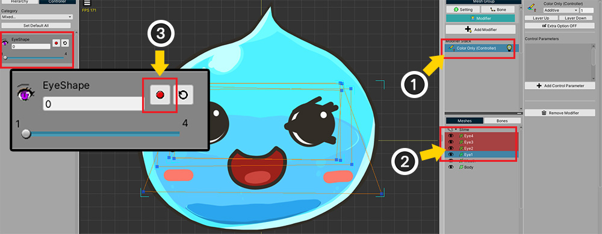
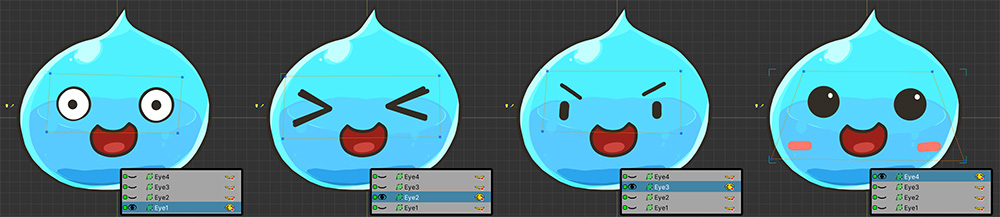
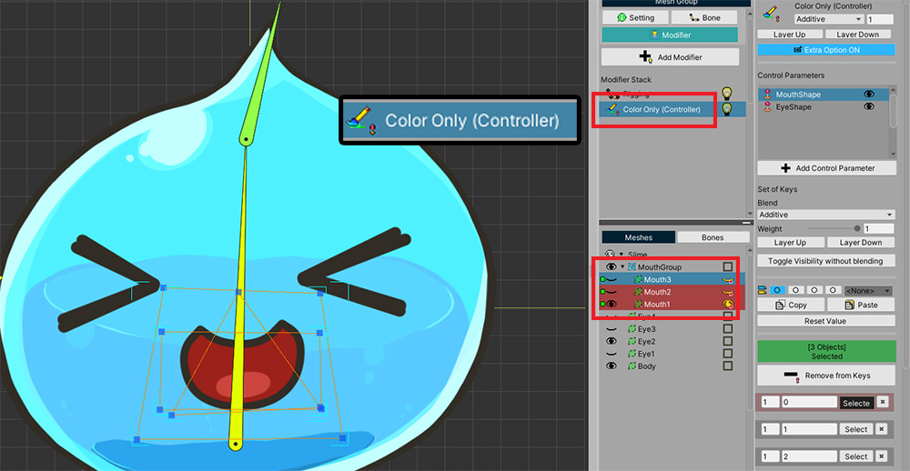

AnyPortrait > Manual > Color Only Modifier
Color Only Modifier
1.3.3
When you want to change the color of a mesh or hide a mesh by control parameters or animations, until now, we mainly used the "Transform modifier".
However, it seems rather unnecessary to use the Transform modifier even if you do not need to change the shape or position of the mesh.
So a new modifier was added in v1.3.3 which is nice to use in this case.
Try the "Color Only Modifier" introduced on this page!

(1) With the Modifier tab of the mesh group selected, click the Add Modifier button.
(2) You can see "Color Only (Controller)" and "Color Only (Animation)" modifiers in the list of modifiers.
- Color Only (Controller) : You can control the color or visibility of the target by control parameters.
- Color Only (Animation) : You can control the color or visibility of the target in keyframes of the animation.

It is possible to reproduce the method introduced in "Getting Started 1 (Related page)" as a Color Only modifier.
(1) Added Color Only (Controller) modifier.
(2) Select the meshes.
(3) Add a key to the control parameter.

Similar to setting visibility with the Transform modifier, you can control the visibility of meshes with the Color Only modifier.
How to use Extra Option

The Color Only modifier also supports "Extra Option" (Related Page).
(1) Press the "Extra Option" button to activate the option.
(2) Select the target and press the "Set" button with the key of the control parameter or the keyframe of the animation.
(3) The "Extra Option" dialog opens. Here you can change the rendering order or replace images.
The case that you need Color Only modifier
"Color Only modifier" is faster than the "Transform modifier" as well as the "Morph modifier" as it only handles simple functions.
So it will usually be used for optimization purposes.
However, only "Color Only Modifier" can be used under the following conditions.
- Child mesh group is added to the mesh group
- Bones and Rigging modifier exist in the parent mesh group
- Meshes of child mesh group are connected to the bones of parent mesh group by Rigging modifier
- If you want to control the visibility or color of the meshes of the child mesh group
"Transform modifier" cannot be used when all of these conditions are satisfied.
In this case, only use the "Color Only modifier".
You can learn more about it in the description that follows.

We reproduced the situation described above.
"Mouth" meshes have been added as included in a child mesh group.

We used the "Rigging modifier" of the parent mesh group to connect the meshes of the child mesh group with the bones.

In this state, let's use the "Transform modifier" as usual.
(1) Add "Transform (Controller) Modifier".
(2) Select the offending "a mesh in child mesh group".
(3) We tried to add it to the modifier, but we can only see a message stating that the rigged child mesh cannot be added.
This is because the "Transform Modifier" is limited due to an issue where the Transform operation through the child mesh group and the Rigging operation conflict and show very strange behavior.

However, using "Color Only Modifier" it is possible to register and control those meshes.